Owner : 🧛🏻♂️ - Mr. Sup3rN0va | 08-April-2021
Tags : #i0S (📲), #android (📱), #pentesting (👨🏼💻), #tools (⚒), #cheatsheet (📜)
Ubuntu Server but will work with all debian based flavoursAssuming you have a windows machine with ubuntu installed in virtual box and enabled openssh server so that we can take SSH of the VM
Now, extract the file SiAAA-Windows.zip and you will find two archives in it. One is for Windows machine and other is for Ubuntu VM
Extract SiAAA-Host and you will see this
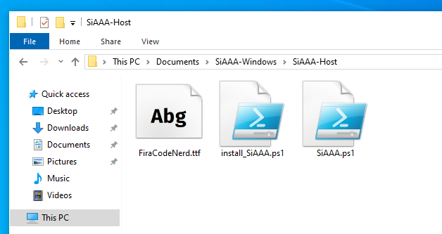
First step will be to install the font. I ![heart]()
Fira Code, so I added that in the package but you can download any other font of your choice but it should be a Nerd Font. This is because the font ligatures can render emojis and other images which will make our terminal visually appealing
Once done, open Windows Terminal and set this font as
"fontFace": "FiraCode NF",
"fontWeight": "bold",
"fontSize": 14,
It should look like
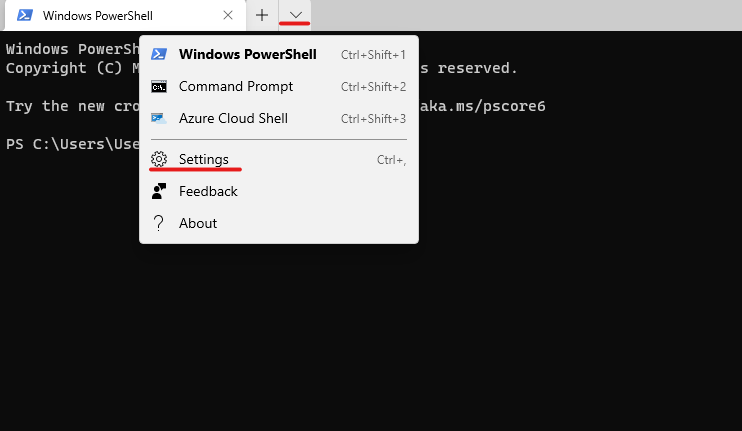
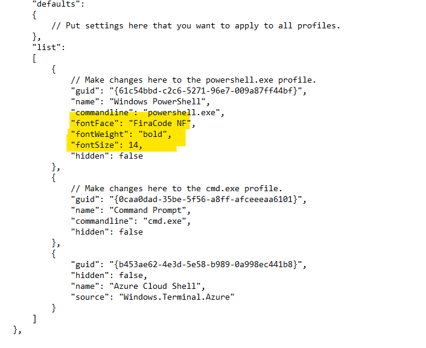
Once done, save the notepad file and close it.
Now, set the execution policy in powershell to allow scripts to run. Copy-paste below on the terminal
Set-ExecutionPolicy -ExecutionPolicy Bypass -Scope CurrentUser
Then run the powershell script install_SiAAA.ps1
This will come up as
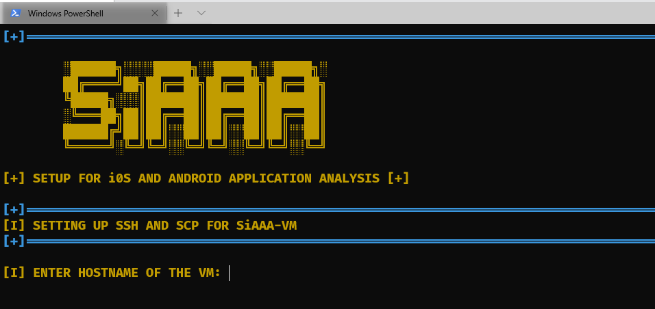
Now the script will ask details like:
server192.168.19.13122userYou can set these values as per your VM and it will show as
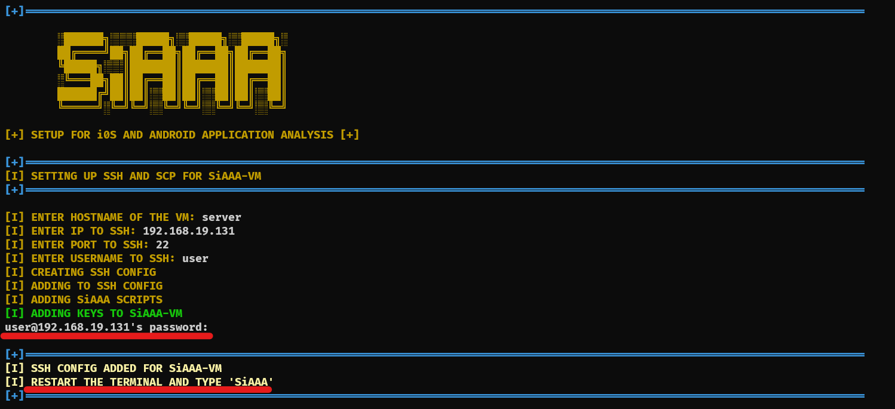
Make sure that Ubuntu VM is running before running the script because the installer will generate new keys and add it to the VM so that you can have passwordless entry
Once done, restart the terminal or open a new tab and type SiAAA
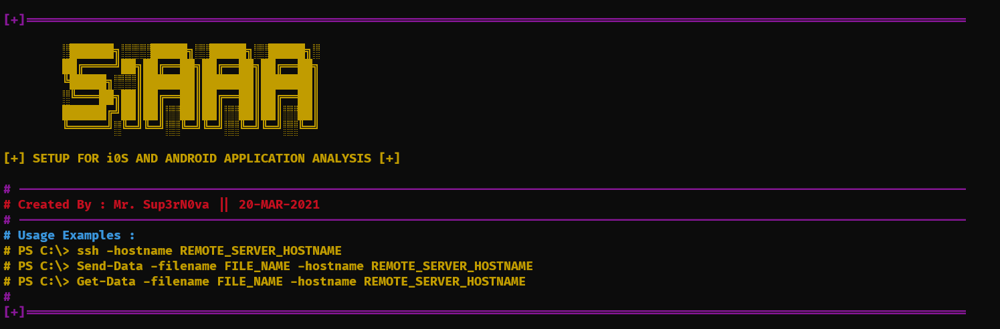
You can see the commands as :
ssh -hostName b0x : SSH to the VMSend-Data -filename <filename> -hostName box : Send data to VM and save it in $HOME of the VMGet-Data -filename <filename> -hostName box : Get data from VM from $HOME folder onlyGOOD NEWS : Above three commands supports argument-based tab completion
SSH of the VMExtract the SiAAA-Linux.tar.xz file
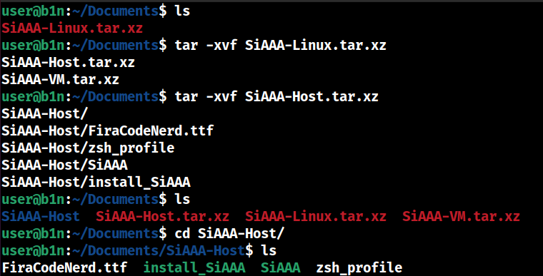
Install the font just like how we did it in windows and change the font on the terminal for better rendering
Run the script install_SiAAA
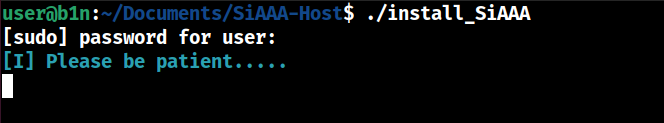
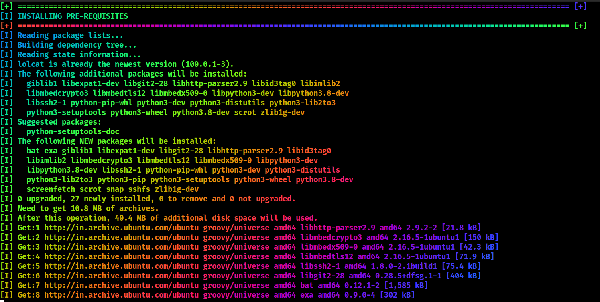
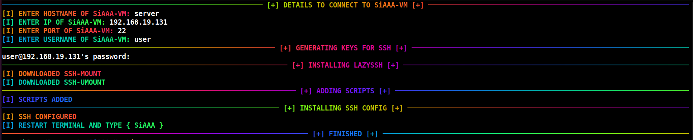
This will install all the dependencies and when once done, restart the terminal and type SiAAA
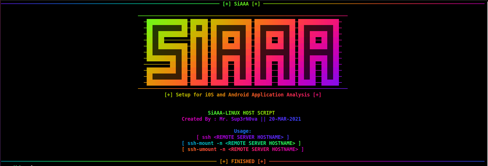
For data transfer, we are using my LazySSH script which will create mount points on either side for data transfer
Type ssh-mount -n server. Here server is the hostname we initially gave to do ssh
This will create Local_server and Remote_server mount points
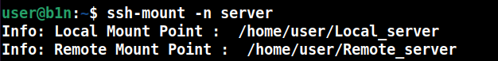
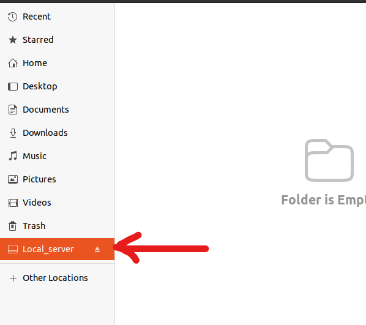
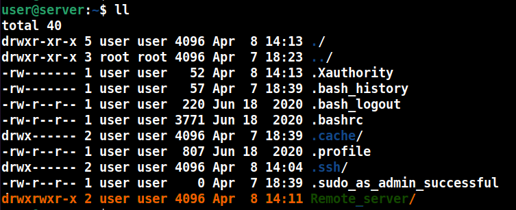
Now you can directly copy-paste data to Local_server and it will get reflected to Remote_server and vice versa
This is same for both the platforms because now we are going to install all the tools inside the VM. The platform specific changes are very few
From Windows host, you can use the command Send-Data to send SiAAA-VM.tar.gz to the VM
From Linux host, you can use ssh-mount folder to dump the file so that it can be shared between host and guest
Now that the file is inside Ubuntu VM, extract it using tar -xvf SiAAA-VM.tar.gz and cd to SiAAA-VM and run the script ./SiAAA
Now this will take time because this will auto-install all the dependencies and do full system upgrade as well. You need to be patient for (30 min)
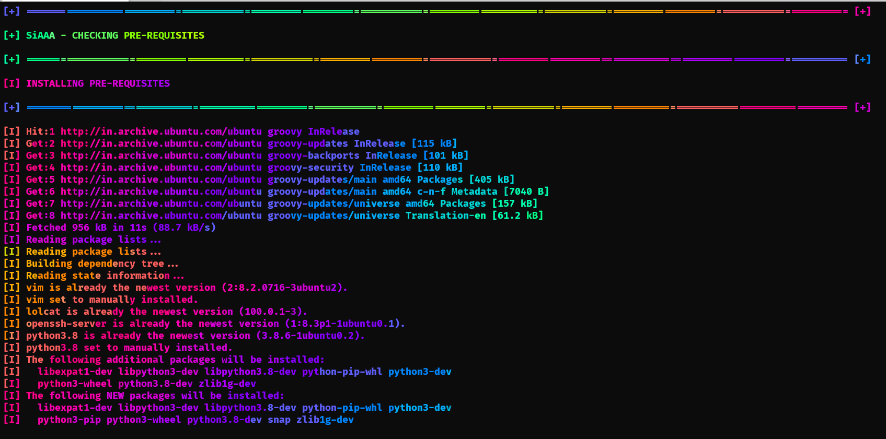
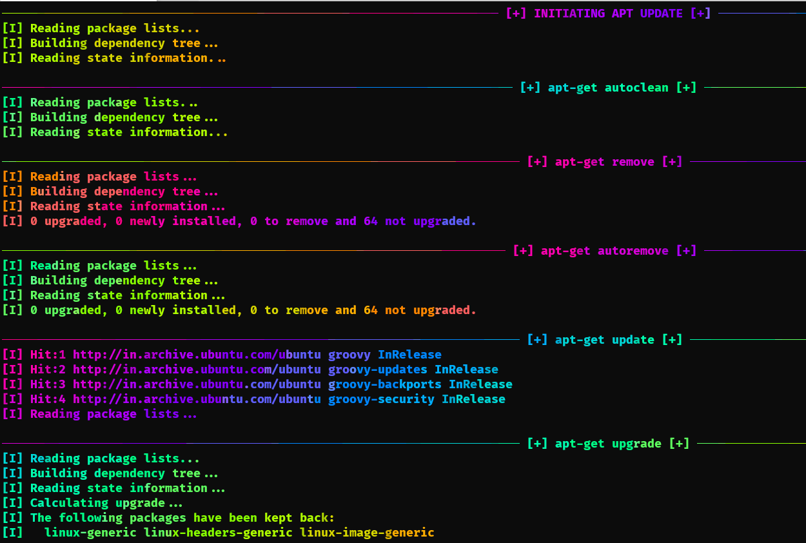
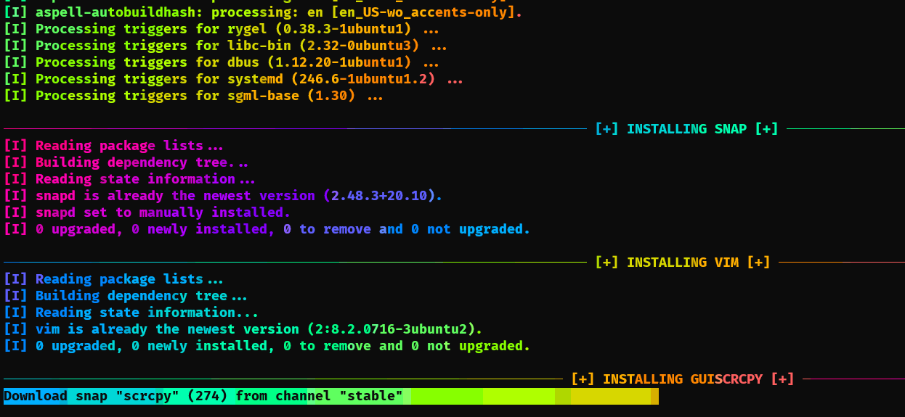
Now here the script will prompt you to add IP. This IP is to export X11 from Ubuntu VM to host Windows machine so that you can run GUI based applications like jadx-gui and others.
Here you can give IP of your Windows machine LAN/WLAN interface IP and allow firewall rule (if prompted) so that VM can access it to forward X11. This will not be there when you use Linux host
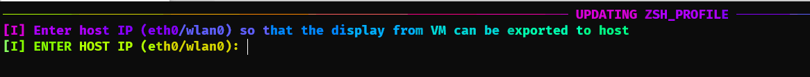
Also make sure that you run
GWSLbefore running any GUI apps because you need to enableX11on host also
The script will ask you to restart the terminal mutiple times while installing NVM
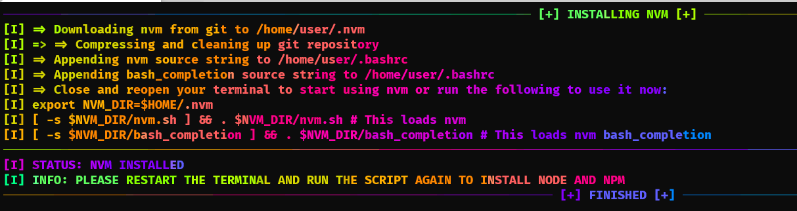
For this you need to logout ssh and login back
Once you re-run the script it will install nvm, node and npm
This is how SiAAA menu looks like after installing all the dependencies
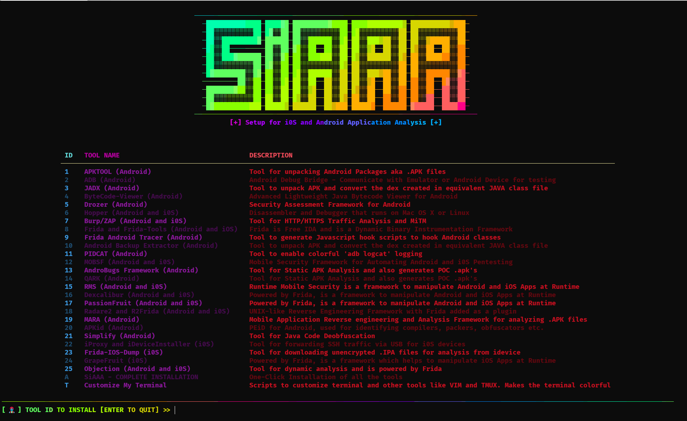
You have an option to either install all the tools in one go or you can install them one by one
You also have an option to customize your terminal which will make your terminal more colorful, add new visuals and adds a lot to your VIM making it a perfect IDE for script writing
SiAAA-Installer, you are given with an option to customize your terminalTZSH and Oh-My-ZSH and its themesTMUX and its themesVIM and its featuresSiAAA, then it will install
batcatexascreenfetchlolcatIMP-NOTE : While installing
Oh-My-ZSH, it will ask you to change the shell (Y/N), hit (Y) and enter the password and then hitControl+Dbecause it will take you toZSHshell thus interrupting your script progress. Once you hitControl+D, you will logout of the shell and the script continues to install other features
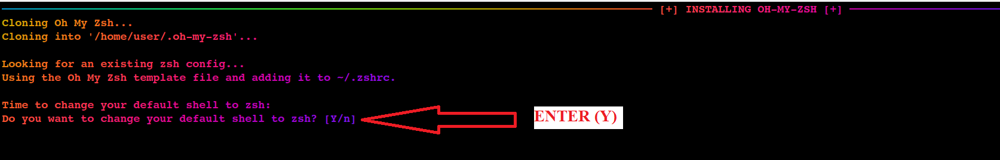
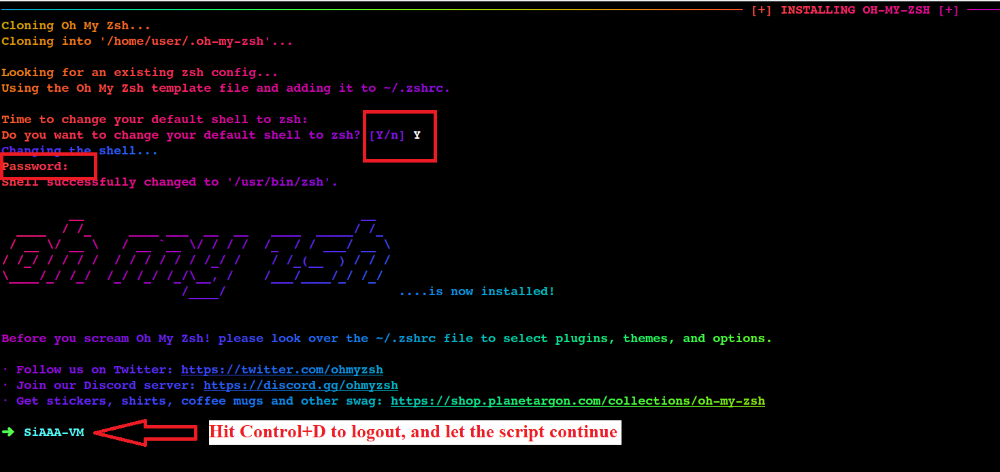
|| Pre-Requisites || Customize My Terminal || Mobile Pentesting Tools Installation ||